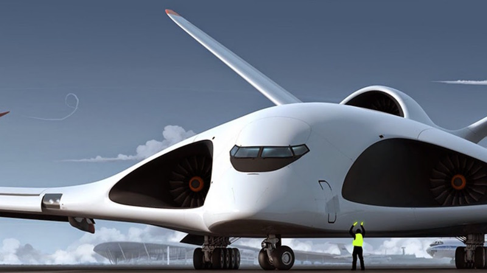

Самолёты будущего
Гражданская авиация кажется одной из наиболее консервативных отраслей: с точки зрения обывателя мы до сих пор эксплуатируем технологии полувековой давности и со времен «реактивной революции» внешне почти ничего не поменялось. Однако это особенность человеческого сознания: проходит пара лет и кажется, что любое чудо техники существовало всегда. Что совсем скоро будет выглядеть для нас обыденным и естественным?
